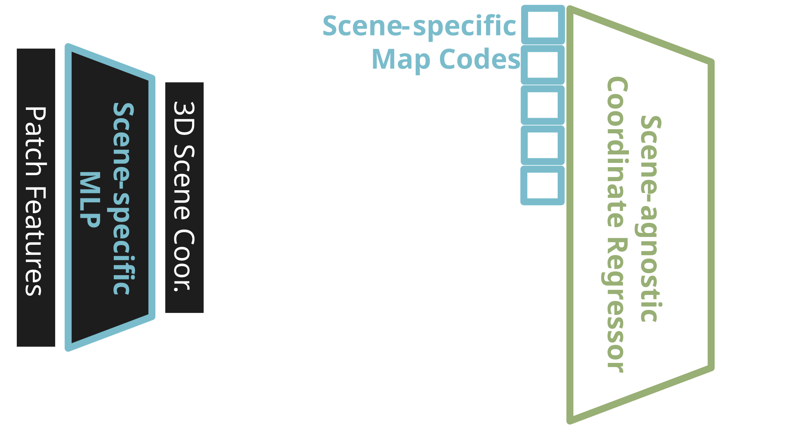
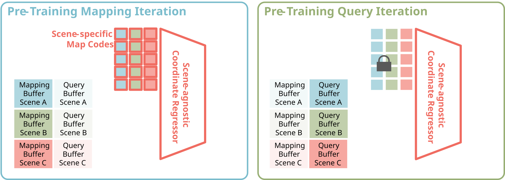

Scene coordjnate regression (SCR) has established itself as a promising learning-based approach to visual relocalization. After mere minutes of scene-specific training, SCR models estimate camera poses of query images with high accuracy. Still, SCR methods fall short of the generalization capabilities of more classical feature-matching approaches. When imaging conditions of query images, such as lighting or viewpoint, are too different from the training views, SCR models fail. Failing to generalize is an inherent limitation of previous SCR frameworks, since their training objective is to encode the training views in the weights of the coordinate regressor itself. The regressor essentially overfits to the training views, by design. We propose to separate the coordinate regressor and the map representation into a generic transformer and a scene-specific map code. This separation allows us to pre-train the transformer on tens of thousands of scenes. More importantly, it allows us to train the transformer to generalize from mapping images to unseen query images during pre-training. We demonstrate on multiple challenging relocalization datasets that our method, ACE-G, leads to significantly increased robustness while keeping the computational footprint attractive.
Most scene coordinate regressors are light-weight networks trained fully per scene. These networks map patch features to their corresponding 3D coordinate. Instead, we split the scene-specific regressor into a set of scene-specific map codes and a scene-agnostic coordinate regressor. The scene-specific part is still found through backpropagation-based optimization, but the regressor can be pre-trained specifically for improving generalization.

We pre-train the scene-agnostic coordinate regressor by mimicking its later use
case: first, find the map codes given a set of mapping images; then, estimate the
scene coordinates for query images
We implement this idea by alternating between mapping and query iterations across hundreds of scenes in parallel (three shown in the illustration below). During mapping iterations, the map codes and the regressor are optimized jointly. During query iterations, only the regressor is optimized. This latter part explicitly aims to force the network to generalize from the mapping data (that was moved into the map codes) to query data.

Once the scene-agnostic regressor is pre-trained, we can find the map codes for new scenes through optimization. Starting from a randomly initialized map codes, we optimize the negative log-likelihood of the reprojection error after projecting the coordinates to the image plane. While we currently pre-train with 3D supervision, our method does not require 3D information at mapping time for new scenes.

Once the map codes for a new scene are optimized, we can relocalize query images within the scene. We use the estimated uncertainty to prefilter the estimated 2D-3D correspondences before finding the pose using a robust PnP solver.

Below we visualize the estimated scene coordinates of ACE-G for different scenes. In addition, we show the ground-truth camera pose, and the estimates of ACE-G and ACE.
If you find this work useful for your research, please consider citing our paper:
@inproceedings{bruns2025aceg,
title={{ACE-G}: Improving Generalization of Scene Coordinate Regression Through Query Pre-Training},
author={Bruns, Leonard and Barroso-Laguna, Axel and Cavallari, Tommaso and Monszpart, {\'{A}}ron and Munukutla, Sowmya and Prisacariu, Victor and Brachmann, Eric},
booktitle={arXiv preprint arXiv:xxxx.xxxxx},
year={2025}
}